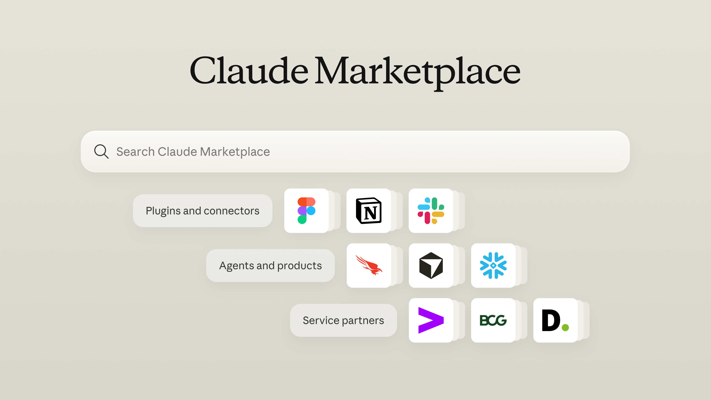

Starting today, the Claude Marketplace brings plugins and connectors, agents and products, and service partners into one place. For customers, it provides a single destination to find the right tools and services. For builders and partners, it offers an easier way to reach teams using Claude.
For customers: discover tools and services to help you do more with Claude
The Claude Marketplace is where teams find what they need to expand how they use Claude. You can:
- Add connectors and plugins. Choose from more than 2,000 available today, including Atlassian, Google, Microsoft, Notion, Salesforce, and more.
- Buy agents and products. Use a portion of your committed Anthropic spend on Claude-powered software from companies like CrowdStrike, Cursor, Harvey, Legora, Lovable, and Snowflake.
- Scale with service partners. Connect with a consulting partner or system integrator from the Claude Partner Network, such as Accenture, Boston Consulting Group, or Deloitte, to build your AI strategy and roll Claude out across your organization.

For builders and partners: get discovered by teams using Claude
Companies that build tools, products, or services for Claude customers can be listed in the Claude Marketplace. Pick the path that fits what you offer:
- Building for teams that use Claude? Create a connector or plugin using the Model Context Protocol (MCP) and Agent Skills, the open standards pioneered by Anthropic.
- Selling a Claude-powered agent or product? Apply to list it on the marketplace. Teams can then use a portion of their committed Anthropic spend to buy it.
- Offering consulting or systems integration? Join the Claude Partner Network to appear in the marketplace, where Claude customers can find and connect with you.